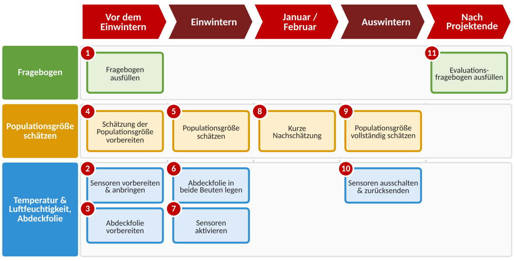
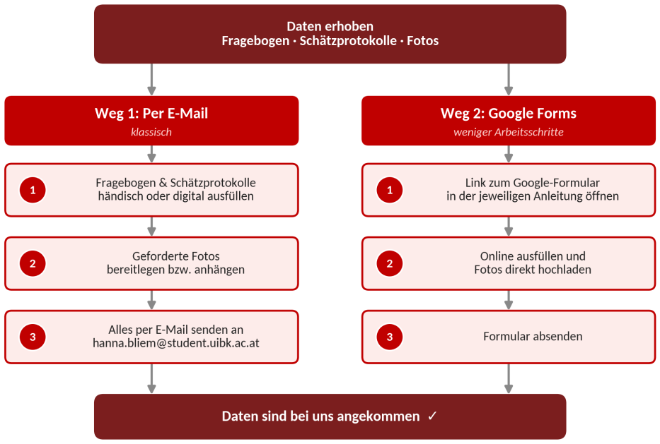

Anleitung: Allgemeine Übersicht
Für Imker:innen im Rahmen der Datenerhebung
Ziel: Dieses Dokument gibt Ihnen einen allgemeinen Überblick und dient als Wegweiser für die nächsten Schritte.
Grundprinzip: Dies ist die Startunterlage, in der alle wichtigen Schritte zusammengefasst sind und in der Sie eine Übersicht finden. Die einzelnen Arbeitsschritte werden in eigenen Anleitungen ausführlich beschrieben:
Vielen Dank für Ihre Unterstützung – wir freuen uns auf eine gute Zusammenarbeit!
hanna.bliem@student.uibk.ac.at
1. Erklärung des Themas
Wie Sie bereits erfahren haben, möchten wir gemeinsam mit Ihnen untersuchen, ob die neu entwickelten isolierten Beuten in der Überwinterung gut funktionieren.
Unser Erkenntnisinteresse: In diesem Projekt vergleichen wir die Funktion der isolierten Beute mit einer „normalen“ Beute in einem echten Praxissetting. Dazu erheben wir die Populationsgröße sowie die Temperatur und Luftfeuchtigkeit.
Die Datenaufnahme besteht aus drei Teilbereichen, dazu kommt am Ende eine Evaluation:
Fragebogen: Start
Erfasst die allgemeine Betriebsweise Ihrer Völker und den Standort. Das hilft uns, die Daten besser einzuordnen und zu interpretieren.
Populationsgröße
Sie schätzen die Populationsgröße Ihrer Völker anhand der Anleitung, die wir Ihnen ebenfalls zusenden.
Temperatur & Luftfeuchtigkeit
Wird über Sensoren in der Beute und im Außenbereich erhoben. Die Anleitung für die Anbringung liegt bei.
Fragebogen: Evaluation
Am Ende des Projekts geben Sie uns Feedback zum Versuch. So sehen wir, was beim nächsten Mal besser laufen kann.
2. Aufgabenübersicht & Zeitplan
Hier finden Sie einen groben Überblick über den Ablauf der Arbeitsschritte. Genaue Informationen entnehmen Sie bitte den einzelnen Anleitungen.
- Bitte führen Sie bei der konventionellen und der isolierten Beute genau die gleichen Behandlungsschritte durch. Der Zeitpunkt muss dabei nicht derselbe sein.
- Öffnen Sie die Beuten während der Überwinterung nur, wenn es unbedingt notwendig ist (z. B. Futterkontrolle, notwendige Behandlungen).
- Das Auswintern schlagen wir zwischen Mitte März und Anfang April vor, bei geeigneten Temperaturen.
| Nr. | Aufgabe | Details in |
|---|---|---|
| Vor dem Einwintern | ||
| 1 | Fragebogen ausfüllen (möglichst zeitnah) | Anleitung Fragebogen |
| 2 | Sensoren vorbereiten und in der Beute sowie im Außenbereich anbringen | Anleitung Sensoren & Abdeckfolie |
| 3 | Abdeckfolie für Beuten vorbereiten | Anleitung Sensoren & Abdeckfolie |
| 4 | Schätzung der Populationsgröße vorbereiten | Anleitung Populationsgröße schätzen |
| Beim Einwintern | ||
| 5 | Populationsgröße schätzen | Anleitung Populationsgröße schätzen |
| 6 | Abdeckfolie in beide Beuten einlegen | Anleitung Sensoren & Abdeckfolie |
| 7 | Sensoren aktivieren | Anleitung Sensoren & Abdeckfolie |
| Januar / Februar | ||
| 8 | Kurze Nachschätzung der Populationsgröße (Frame-Top-Clusterzählung) | Anleitung Populationsgröße schätzen |
| Beim Auswintern | ||
| 9 | Populationsgröße nochmals vollständig schätzen | Anleitung Populationsgröße schätzen |
| 10 | Sensoren ausschalten und an uns zurücksenden | Anleitung Sensoren & Abdeckfolie |
| Nach Projektende | ||
| 11 | Evaluationsfragebogen ausfüllen (Feedback zum Projekt) | Anleitung Fragebogen |
Grafische Übersicht

3. Datenübermittlung
Sie können selbst wählen, auf welchem Weg Sie uns die Daten übermitteln:
- Per E-Mail: Sie füllen den Fragebogen und die Schätzprotokolle händisch oder digital aus und senden sie uns zusammen mit den geforderten Fotos per E-Mail an hanna.bliem@student.uibk.ac.at.
- Über Google Forms: Fragebogen und Schätzprotokolle können Sie direkt online ausfüllen. Die passenden Formulare sind in den jeweiligen Anleitungen verlinkt, auch die Fotos lassen sich dort direkt hochladen. So möchten wir Ihnen einige Arbeitsschritte ersparen.

4. Material
Hier nochmals eine Checkliste der Materialien, die wir Ihnen zur Verfügung stellen, sowie der Dinge, die Sie selbst bereithalten:
Von uns zur Verfügung gestellt
- Isolierte Testzarge
- 8 Sensoren
- Klebeband für die Anbringung der Sensoren
- Schutzhütte für die Sensoren im Außenbereich
- Kreislibelle
- 2 Abdeckfolien (1 pro Beute)
Bitte selbst bereithalten
- Meterstab oder Maßband
- Münzen
- Gummiband
- Weiteres Kleinmaterial, das Sie wahrscheinlich bereits besitzen (siehe jeweilige Anleitung)
Vielen Dank für Ihre Kooperation!
Projekt „Testung isolierter Bienenbeuten“ · Institut für Zoologie, Universität Innsbruck · hanna.bliem@student.uibk.ac.at